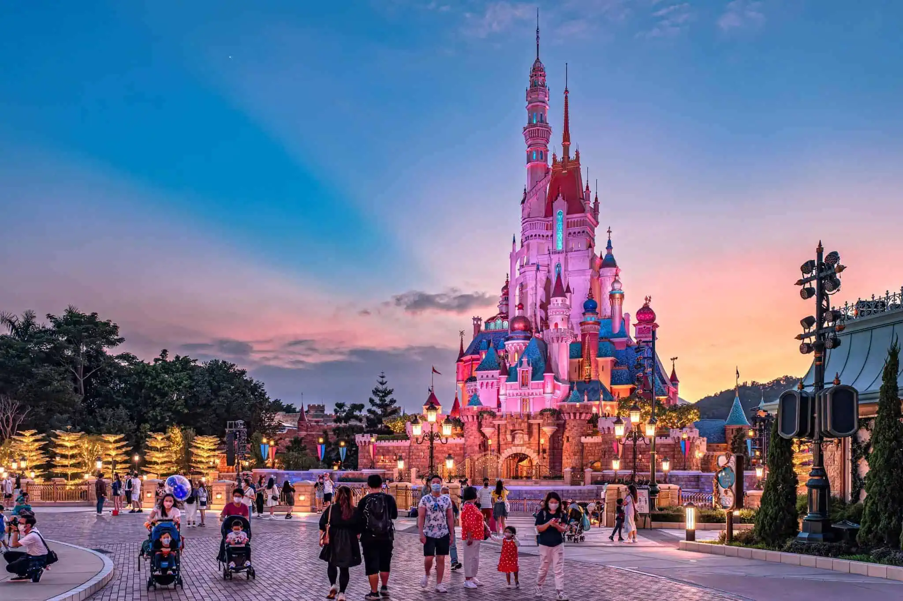

.png)

 The Most Magical Party Of All
The Most Magical Party Of All
Hong Kong Disneyland, which opened on September 12, 2005, is the smallest Disney park but stands out
for its unique attractions and themed areas not found in other Disney resorts. Originally featuring a
replica of California’s Sleeping Beauty Castle, it was later transformed into the Castle of Magical Dreams,
a completely redesigned landmark inspired by 13 Disney princesses and queens. The park is known for hosting
the world’s first Marvel-themed rides, such as the Iron Man Experience and Ant-Man and The Wasp: Nano Battle!,
and its exclusive themed lands including Mystic Manor, Grizzly Gulch, and the first-ever Toy Story Land. Seasonal
events, especially during Halloween and Christmas, bring in large crowds, with the Halloween version being notably
darker and more thrilling than those at other Disney parks.
Located on reclaimed land on Lantau Island, the resort is accessible via a special Disney-themed MTR line decorated
with Mickey-shaped windows and handles. The park’s design incorporates feng shui principles, including the repositioning
of entrances to ensure good energy flow. Hidden Mickeys can be found throughout the park, adding to the fun for observant guests.
Hong Kong Disneyland also offers a range of themed hotels such as the Victorian-style Hong Kong Disneyland Hotel, the adventurous Disney
Explorers Lodge, and Disney’s Hollywood Hotel. Attractions like the multilingual Jungle River Cruise and the popular stage show Mickey
and the Wondrous Book further enhance the park’s charm.
Planning tip:Despite its smaller size, Hong Kong Disneyland continues to expand and evolve, adding new rides, updating themed lands, and
improving character experiences. These continuous developments ensure that each visit remains fresh, magical, and exciting for both locals
and international visitors.